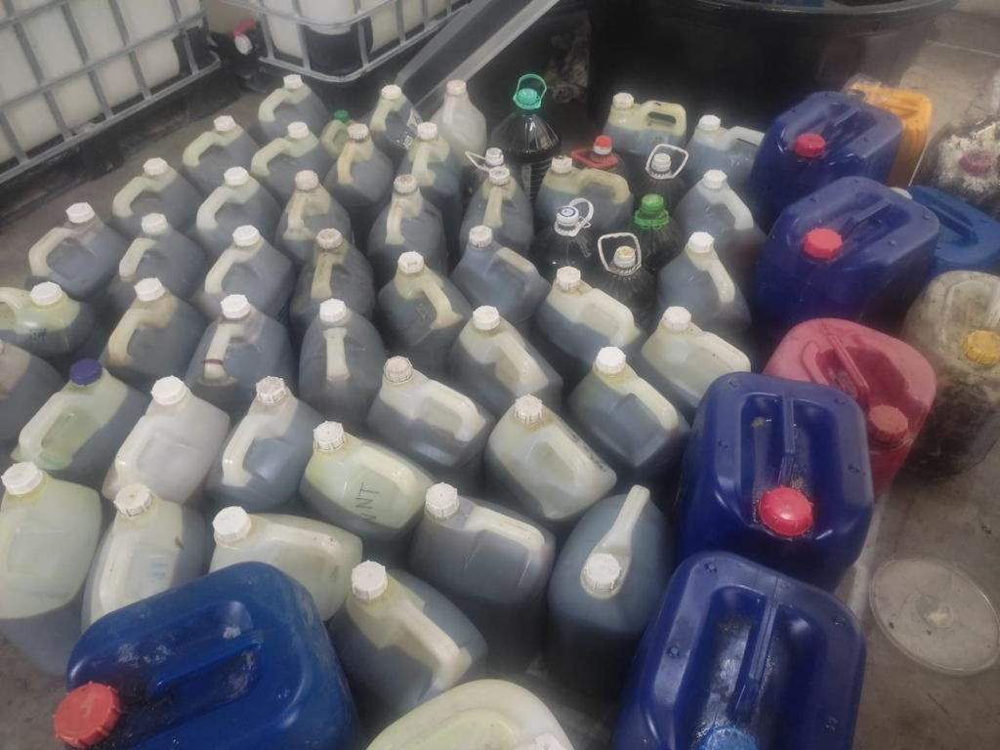
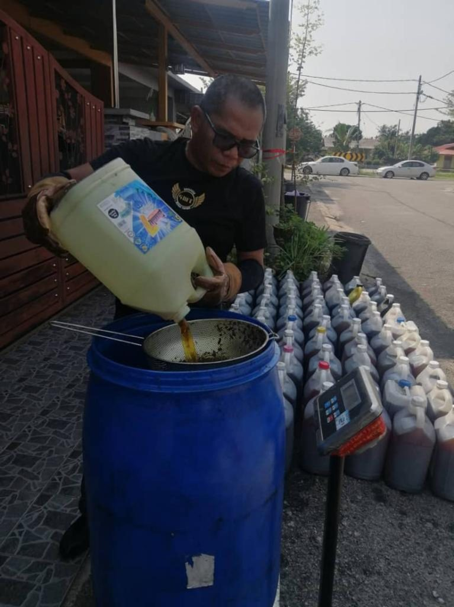
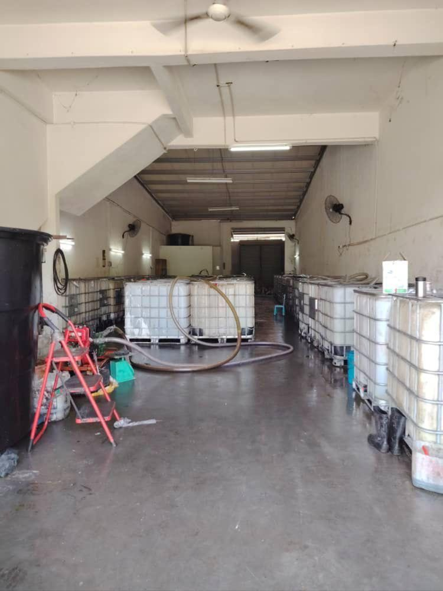
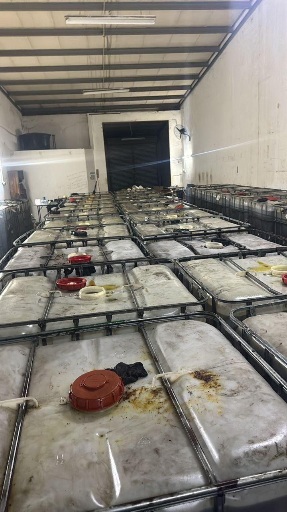
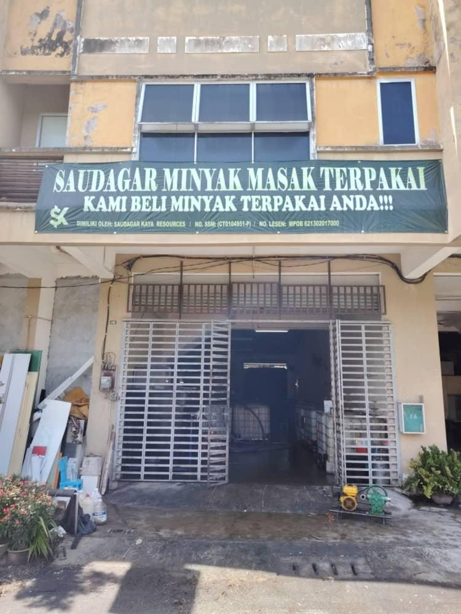

Hotel, kilang dan kedai makan
- Kutipan berjadual, mingguan atau bulanan
- Ditimbang di hadapan pekerja anda
- Harga mengikut kuantiti
- Pembeli berlesen MPOB untuk rekod anda
Kami pembeli berlesen MPOB dan membeli minyak masak terpakai pada harga yang tinggi. Ejen kami ada di setiap kawasan di Perak dan datang terus ke rumah, kedai, hotel atau kilang anda.

Pilih jenis dan bilangan bekas yang anda ada. Mesej WhatsApp akan disediakan secara automatik, dan kami akan mengesahkan harga hari ini.
—
Hantar melalui WhatsAppPilih sekurang-kurangnya satu bekas dahulu.
Harga mengikut pasaran semasa. Hubungi kami melalui WhatsApp untuk mendapatkan harga hari ini.
Tapis minyak yang sudah sejuk dan simpan dalam bekas bertutup.
Hantar anggaran dan lokasi. Kami datang terus ke rumah, kedai atau kilang.
Minyak ditimbang di hadapan anda dan dibayar mengikut berat.
Setiap dapur menghasilkan minyak terpakai. Cara minyak itu dilupuskan memberi kesan kepada paip rumah, sungai dan kesihatan keluarga kita.
Minyak yang dituang ke sinki akan sejuk lalu mengeras bersama sisa makanan. Ia menyumbat paip, perangkap minyak dan longkang di luar, dan kos membaikinya ditanggung oleh anda.
Minyak dalam longkang mengalir ke sungai, membentuk lapisan di permukaan air dan memudaratkan ikan serta sumber air yang kita gunakan.
Minyak yang dipanaskan berulang kali menjadi rosak dan tidak baik untuk kesihatan. Jual kepada pembeli berlesen MPOB supaya minyak diproses dengan betul, bukan dijual semula sebagai minyak masak.
Minyak yang dikutip diproses menjadi biodiesel dan bahan api boleh baharu. Minyak yang sama digunakan semula dengan cara yang betul.
Apa yang dahulunya dibuang kini menjadi wang. Bagi kedai makan dan hotel, jumlahnya menjadi pendapatan bulanan yang tetap.
Buang sisa makanan dan tepung selepas minyak sejuk.
Gunakan botol, jerikan atau tin yang bersih dan bertutup.
Jangan campurkan dengan air, sabun atau minyak enjin. Minyak yang bercampur mungkin ditolak.
Dari dapur anda hingga menjadi bahan api boleh baharu. Setiap langkah dikendalikan oleh pembeli berlesen, jadi minyak anda tidak kembali ke kuali orang lain.



Botol minyak terpakai yang sama, dua pengakhiran yang sangat berbeza.
Kilang, hotel, restoran dan kantin yang berminat menjual minyak masak terpakai kepada kami amat dialu-alukan. Sama ada anda menggoreng setiap hari atau mengumpul daripada orang lain, kami membeli dalam apa jua kuantiti.

Kutipan sebenar dari rumah, kedai dan gudang kami di Chemor.
Kami membeli minyak masak terpakai di Perak sejak 2020. Hari ini rangkaian ejen kami meliputi seluruh negeri, dan setiap titis minyak dikumpul di premis kami yang berlesen MPOB di Chemor.
Kami ada ejen di setiap kawasan. Permintaan anda akan diserahkan kepada ejen yang terdekat supaya kutipan dapat dibuat dengan lebih cepat.

Kami sudah ada 12 ejen di seluruh Perak, dan kami masih mencari lagi. Jika anda mahu menjana pendapatan dengan mengutip minyak masak terpakai di kawasan anda, kami mengalu-alukan penyertaan anda.
Syarat dan kadar ejen diterangkan terus melalui WhatsApp.
Ya, kami berdaftar dan berlesen di bawah MPOB (no. lesen 621302017000).
Harga mengikut pasaran semasa dan kuantiti. Hubungi kami melalui WhatsApp untuk mendapatkan harga hari ini.
Seluruh Perak. Kami ada ejen di setiap kawasan dan akan menyerahkan permintaan anda kepada ejen yang paling dekat.
Boleh. Kami membeli daripada semua pengumpul yang berminat. Maklumkan kawasan dan anggaran kuantiti anda melalui WhatsApp untuk mendapatkan harga pukal hari ini.
Tidak. Ejen kami datang terus ke rumah, kedai, hotel atau kilang anda. Anda juga boleh menghantarnya sendiri ke premis kami di Chemor.
Minyak masak terpakai yang sudah ditapis, tidak bercampur air atau minyak enjin.
Biasanya diterima. Yang penting tidak bercampur air, sabun atau minyak enjin. Jika ragu-ragu, hantar gambar melalui WhatsApp dan kami akan menyemaknya.
Maklumkan anggaran anda melalui WhatsApp dahulu, dan ejen akan mengesahkannya. Kuantiti kecil juga boleh dihantar sendiri ke premis kami di Chemor.
Harga minyak masak terpakai mengikut pasaran semasa, termasuk permintaan biodiesel dan harga minyak sawit, serta kuantiti dan kualiti minyak anda.
Membeli dan menyimpan minyak masak terpakai memerlukan lesen daripada Lembaga Minyak Sawit Malaysia (MPOB). Menjual kepada pembeli berlesen bermaksud minyak anda diuruskan secara sah dan tidak kembali ke pasaran sebagai minyak masak.
Simpan dalam bekas bertutup di tempat teduh dan jauh daripada hujan. Sebaik-baiknya, jual dalam tempoh beberapa minggu supaya tidak dimasuki air atau serangga.